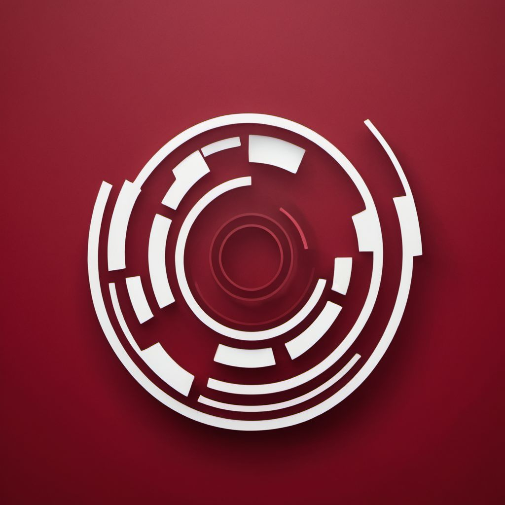

<!-- <header>
    <div class="left">
      <span class="logo"></span>
      <a class="name" routerLink="/">Muzix</a>
    </div>
    <div class="right">
      <a routerLink="/">Home</a>
      <a routerLink="/login">Login</a>
      <a routerLink="/signup">Signup</a>
    </div>
</header> -->
<header>
  <div class="left">
    <span class="logo"></span>
    <a class="name" routerLink="/"[ngStyle]="{'background': 'linear-gradient(to right, #76eec6, #00bfff)', '-webkit-background-clip': 'text', '-webkit-text-fill-color': 'transparent'}">Cinema Sphere</a>
  </div>
  <div class="right">
    <a routerLink="/" [ngStyle]="{'background': 'linear-gradient(to right, #76eec6, #00bfff)', '-webkit-background-clip': 'text', '-webkit-text-fill-color': 'transparent'}">Home</a>
    <ng-container *ngIf="isLoggedIn(); else loginLinks">
      <a [ngStyle]="{'background': 'linear-gradient(to right, #76eec6, #00bfff)', '-webkit-background-clip': 'text', '-webkit-text-fill-color': 'transparent'}">Hello, {{getUserName()}} </a>
      <a (click)="logout()" [ngStyle]="{'background': 'linear-gradient(to right, #76eec6, #00bfff)', '-webkit-background-clip': 'text', '-webkit-text-fill-color': 'transparent'}">Logout</a>
    </ng-container>
    <ng-template #loginLinks>
      <a routerLink="/login" [ngStyle]="{'background': 'linear-gradient(to right, #76eec6, #00bfff)', '-webkit-background-clip': 'text', '-webkit-text-fill-color': 'transparent'}">Login</a>
      <a routerLink="/signup" [ngStyle]="{'background': 'linear-gradient(to right, #76eec6, #00bfff)', '-webkit-background-clip': 'text', '-webkit-text-fill-color': 'transparent'}">Signup</a>
    </ng-template>
    <button mat-icon-button [matMenuTriggerFor]="menu" aria-label="Example icon-button with a menu" class="custom-icon">
      <mat-icon>more_vert</mat-icon>
    </button>
    <mat-menu #menu="matMenu" >
      <button mat-menu-item routerLink="orders">
        <mat-icon [ngStyle]="{'background': 'linear-gradient(to right, #76eec6, #00bfff)', '-webkit-background-clip': 'text', '-webkit-text-fill-color': 'transparent'}">account_circle</mat-icon>
        <span>My Orders</span>
      </button>
      <button mat-menu-item routerLink="favorites">
        <mat-icon [ngStyle]="{'background': 'linear-gradient(to right, #76eec6, #00bfff)', '-webkit-background-clip': 'text', '-webkit-text-fill-color': 'transparent'}">favorite</mat-icon>
        <span>My Favorites</span>
      </button>
    </mat-menu>

  </div>
</header>
